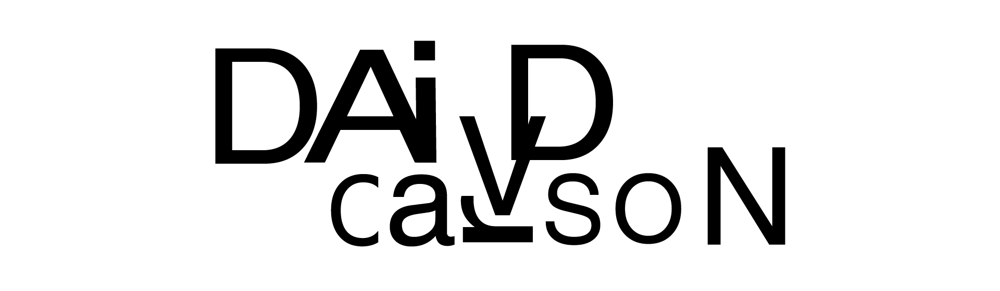

클라이언트가 전달하려는 이미지와 디자이너의 사적 스타일이 조응할 때는 이야기가 달라지기도 합니다.
하지만 이러한 상황은 대체로 브랜드에서 자사의 브랜드 포지셔닝을 옮기고 싶을 때 그 브랜드의 가치와 걸맞는
아트워크를 해줄 수 있는 아티스트의 성향을 클라이언트가 역으로 찾아가는 경우가 대부분 입니다.
이와 같은 사회 구조 속 디자인이 처한 현실에 대해 데이빗 카슨은 이렇게 대답했습니다.
“제 소신은 제가 작업하는 일에 저를 집어넣는다는 것입니다."
적어도 저는 일에 대해서 중립적이기가 불가능합니다.
중립적이란 것은 다른 쪽에서 보면 상투적인 것입니다.
나는 누구인가, 나는 무엇을 즐기고 있는가. 바로 나를 투영하는 것이 중요합니다.
디자이너는 이를 통해 디자인에 부가가치를 불어넣습니다. 저는 결국 저의 독자성으로 차별화된 디자인을 만들게 되는 것입니다.”
이러한 데이빗 카슨의 태도는 작업물에서 고스란히 들어납니다.
텍스트 위를 내달리고 있는 각진 파쇄선, 각 단락의 마지막 줄 간격을 맞추기 위해 임의로 동원된 정렬,
데이빗 카슨의 작업에서 서체의 요소는 앞서 말했듯 읽기 위함이 아닌 회화적이고 감성적인 방식으로 취급됩니다.